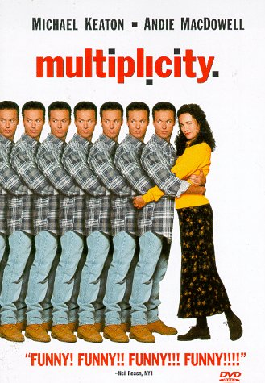

Debriefing my mastodon migration
It’s almost time to get back to work, so this is going to be quick. Or, I may leave this post open and add to it throughout the day. One thing is for sure, I don’t have time to use Adobe Express to make a header for this blog post. Moving forward, I think I would like the option to have some #rstats generative art code do that for me. That way I can rip into the writing faster.
About a week ago I tried Mastodon. It feels longer ago. I went from joining an instance, to learning about the fediverse, activitypub, and more, to spinning up my own instance using masto.host. So, crumplab.com got a new subdomain: https://bbs.crumplab.com
As of right now this instance is closed to new accounts. But, it is possible to view the local feed, showing posts made by accounts inside the instance: bbs.crumplab.com/public. In general, the local feeds of other instances can be viewed in the same way (provided the instance admins approve the option).
When I get time to keep my skill set up to date, I dive in, so I’m happy I happened to have a bit of time to get started with the fediverse. I’m pretty sure all of these tools will become useful for my research and teaching, as well as my students. And, I need to become semi-proficient in the tool set before it becomes usable in the lab and classroom, so I got busy learning the ropes of administering a mastodon instance, as well as operating an account. Much more important was observing and listening to the existing communities on mastodon, for tips and conventions for engaging with the fediverse. I’m very happy to meet such a wide array of engaged people who are stewards of the digital community. It’s been fun watching the migration and learn from others. For example, Danielle Navarro has shared a super helpful overview https://blog.djnavarro.net/posts/2022-11-03_what-i-know-about-mastodon/. I’m seeing a lot of cognition folks, and even CJEP has a mastodon account!
Admin life
I have lots to learn as a mastodon admin, but so far masto.host made the whole operation very easy. I started on a moon plan and quickly upgraded to a planet because I can see becoming a longer term user. As I get tooled up, the next step would probably be running the instance on my own server somewhere. The main hassle I’m dealing with as an admin is blocking other instances (see this helpful list if you are looking to block instances: https://github.com/chaossocial/about/blob/master/blocked_instances.md)
I did not have time to learn how to use the mastodon API, which is very-well documented; so, I was unable to automate the process of blocking instances. There is an older R client for mastodon, and a brand new one in the works called rtoot, which is very exciting. I’ll wait for that one before attempting to automate admin tasks.
Multiplicities
If I’m being honest Multiplicity did not hold up. But, that’s OK, I still ❤️ Michael Keaton.

The mastodon switch has prompted me to personally reflect upon my own social media use. As a part of the reflection, and as an excuse to learn more about Mastodon, I made a few different accounts on my instance. I am now me, myself, and I.
Main Alt
My main account is @MattCrump@bbs.crumplab.com, link: https://bbs.crumplab.com/@MattCrump. I’ll use this one mostly for general interest and academic related things, and to occasionally boost my other interests in visual and audio mediums.
Visual alt
I enjoy making visual things, so I made an alt for that @MattCrumpLab@bbs.crumplab.com, link: https://bbs.crumplab.com/@MattCrumpLab. I sometimes shared this stuff on twitter, and am currently sharing things on instagram. But, not really into those venues. So, I’m trying out personal decentralization on mastodon. If people want to follow my visual stuff, they can do that, and won’t get spammed (to often :) ) from my main account. Plus, having an account for my visual interests seems to help me focus and curate that interest more finely. It’s fun. There is loads of interest people doing #MastoArt.
Audio Alt
I enjoy making music, so I made an alt for that too @homophony@bbs.crumplab.com, link: https://bbs.crumplab.com/@homophony. I’m very excited for #fediversemusic and #mastomusic.
Account management
I went from a few social media accounts to more accounts, what I am doing to myself?
It seems to me that having multiple accounts is useful and not uncommon on mastodon and the fediverse. The benefit to me is already clear; however, I there was a learning curve to quickly managing multiple accounts. Toot! for ios is very good, it allows me fast access to any account. For example, I log in to all of my accounts AND I log in at the server level. This way I can browse my federated timeline and respond from any account. It works really well. Overall, I’m looking forward to seeing the development of more clients for the fediverse. Given the current migration pattern, I’m optimistic. Regardless, protocols over platforms seems like the way to go, especially for my use cases.
Research and Teaching
Speaking of research and teaching, I need to get back to that. On the research front, I’m considering creating a user account on my instance for online experiments that we run in the lab. More on that later.
On the teaching front, I’m toying with setting up a mastodon instance for a class to use for a semester. There are so many interesting ways to take this, and it would generate a whole bunch of discussion around digital citizenship issues. Mastodon is very flexible in terms of what kind of access and identity (anon) for accounts users. What about FERPA? Need to learn more.
Back to it. Hug a friend.